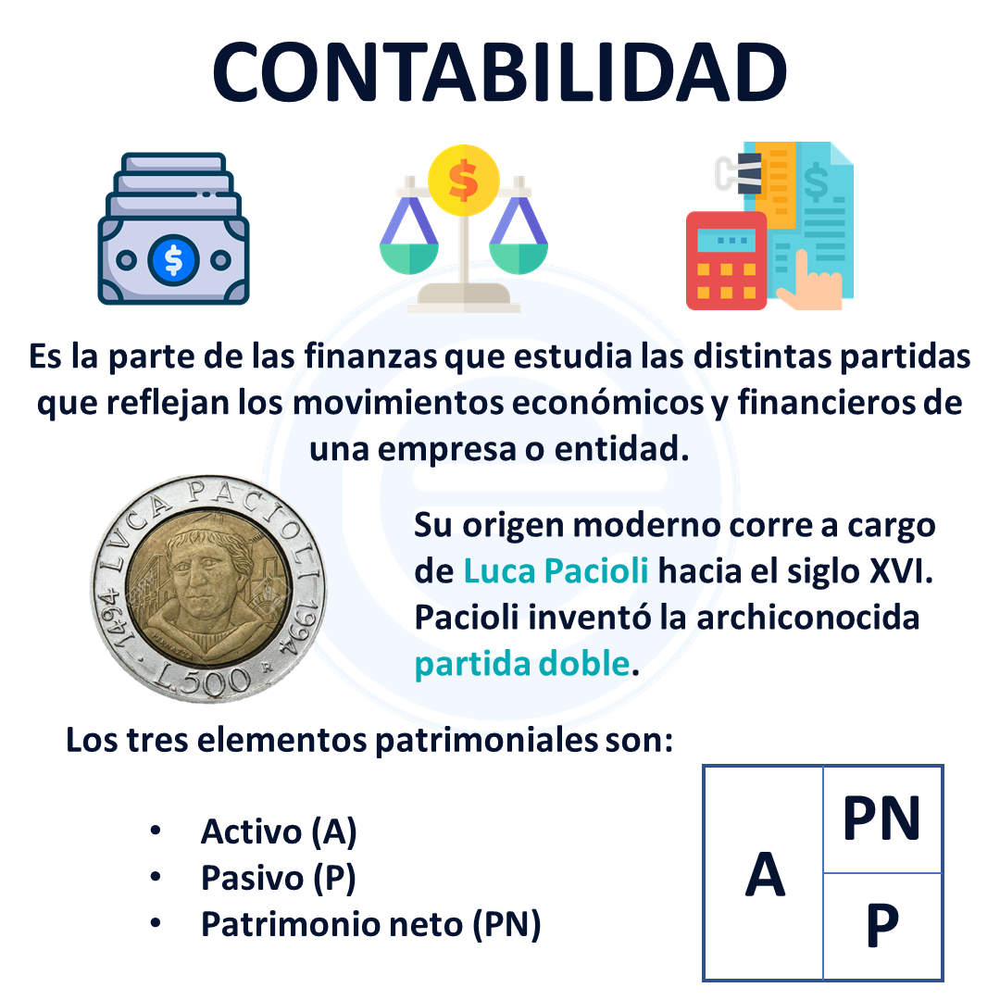

Introducción a la Contabilidad
¿Qué es la contabilidad?
Es la ciencia social que se encarga de estudiar, medir, analizar y registrar el patrimonio de las organizaciones, empresas e individuos, con el fin de servir en la toma de decisiones y control, presentando la información, previamente registrada, de manera sistemática y útil para las distintas partes interesadas.
Objetivo de la contabilidad
La finalidad de la contabilidad es suministrar información en un momento dado y de los resultados obtenidos durante un período de tiempo, que resulta de utilidad a los usuarios en la toma de sus decisiones, tanto para el control de la gestión pasada, como para las estimaciones de los resultados futuros, dotando tales decisiones de racionalidad y eficiencia.
Se muestra a continuación un video en donde se detalla algunos conceptos fundamentales referentes a la contabilidad:
A continuación, se muestra un mapa conceptual con una introducción básica a la contabilidad: